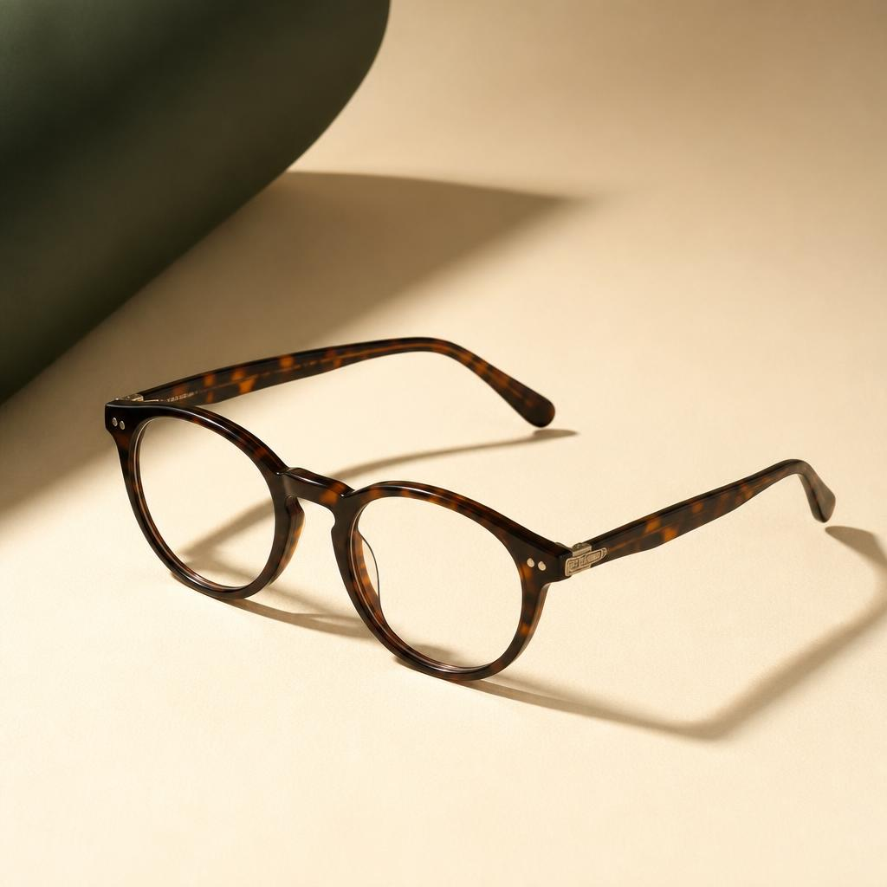

Meridian is an independent optical studio. Each pair starts with your prescription's exact axis and curvature, not a template — so the lens sits where your eye actually needs it to.

We record your prescription's axis and cylinder, plus the tilt and distance your current glasses actually sit at.
Each lens is surfaced to your exact axis in-house, then edged to the frame you've chosen.
Bridge, temple, and pantoscopic tilt are adjusted on your face, not on a mannequin head.
A last check confirms the optical centre of the lens lines up with your pupil before it leaves the studio.
Each shape is cut to hold a different range of prescriptions well — steeper curves suit stronger lenses, flatter ones suit milder corrections.
A round profile in layered acetate, built with a slightly deeper lens well for stronger prescriptions. Warm tortoise or ink colourways.
Best for prescriptions above ±4.00
A rectangular titanium frame, near-weightless on the bridge. The flatter lens face suits mild-to-moderate corrections and larger pupillary distances.
Best for prescriptions below ±3.00
A browline shape, metal below and acetate above, for wearers who switch between reading and distance correction through the day.
Best for progressive and bifocal lenses
"We stopped asking people to pick a frame off a wall and then hope the lens fit it. We measure the eye first — the frame is just what holds the answer."